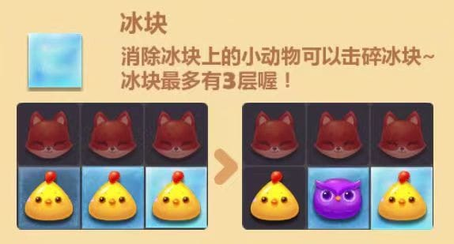
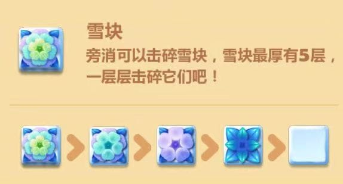
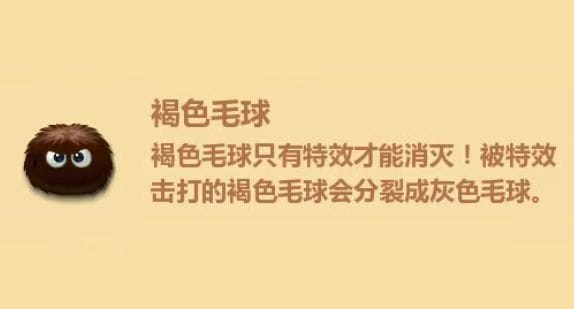
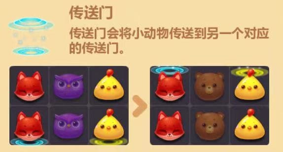
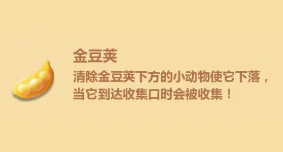

-

冰块
开心消消乐冰块是动物表面的一层透明状物体，这只是最基础的冰块，随着你的等级越高遇到的冰块任务就越难，简单的一次三消就ok，难点的要3次才可以，而且还是一大波一大波的出现，冰块任务是玩家遇到的最常见要求之一，想要有所突破，只能在特效上加强了。
消除冰块上的小动物可以击碎冰块~ 冰块最多有3层喔!
-

雪块
白色雪块，消除比较的容易，只要消除周边的动物就可以消除雪花。蓝色雪块，消除难度增加，需要消除两次，一次消除变成白色雪块，再次可以完全消除。粉色雪花，消除3次。第一次消除变成蓝色雪花，第2次消除变成白色雪块，第三次可以完全消除。绿色雪花，消除4次，也是逐渐的减少雪花层数，到最后变成白色雪块彻底消除。
旁消可以击碎雪块，雪块最厚有5层，
一层层击碎它们吧！
-

褐色毛球
褐色毛球在消除的时候必须使用特效，普通的消除是没有作用的。同时在消除之后，还会裂变。想要消除关卡中的褐色毛球，除了制作特效以外，我们还可以使用魔法石来进行消除。在关卡中出现的魔法石点亮之后，可以消除大量的障碍物。其中包括关卡中出现的褐色毛球。所以魔法石虽然消除的范围比较少，但是威力与特效是一样的呢。
褐色毛球只有特效才能消灭！被特效击打的褐色毛球会分裂成灰色毛球
-

传送门
传送门一般出现在单层的一排最下侧的位置。在消除的时候，会发现当传送门另一侧的下方动物被消除之后，也会带动上一侧的动物变化。有的时候，单独隔离出现的布局，就是需要传送门来进行变化动物元素的。传送门下落的一侧之后，两边的布局元素都会发生变化。所以在关卡中，我们还可以根据他的变化规律来进行消除。
传送门会将小动物传送到另一个对应的传送门。
-

金豆荚
要消除开心消消乐中的金豆荚，玩家需要消除金豆荚下方的动物，使金豆荚下落到底部收集栏。消除开心消消乐中的金豆荚需要玩家灵活运用策略和道具，观察关卡布局并提前规划好消除步骤。通过不断地尝试和实践，玩家可以掌握更多有效的消除技巧，顺利完成关卡挑战。
经清除金豆荚下方的小动物使它下落，当它到达收集口时会被收集！